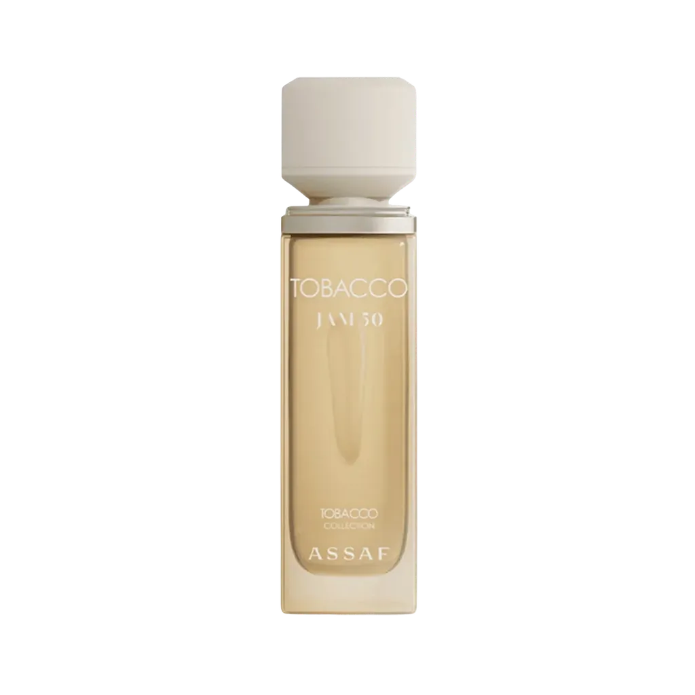

Tobacco Jam 50 by Assaf as an authentic decant — a Tobacco, Balsamic, Warm-Spicy, Vanilla, Oriental, Woody. inspired by Amouage Purpose 50. Ships across India with free shipping over ₹999 on 2+ decants.
| Size | Price | Per ml |
|---|---|---|
| 3ml | ₹169 | ₹56 |
| 5ml | ₹265 | ₹53 |
| 7.5ml | ₹409 | ₹55 |
| 10ml | ₹509 | ₹51 |
| 20ml | ₹975 | ₹49 |
| 30ml | ₹1,399 | ₹47 |
Currently in stock for decants.
Copy your choice and message us on WhatsApp — we confirm stock and payment instantly.
Order on WhatsAppCall +91 93555 33509Notes / profile: Tobacco, Balsamic, Warm-Spicy, Vanilla, Oriental, Woody.
Best for: Fall / Winter seasons, evening and night, for date-night, special-occasion, cold weather.
Mood: Cozy, Sexy.
Reminds me of: Amouage Purpose 50.
References: Fragrantica Parfumo
Learn how this decant is filled and verified.
Season: Fall, Winter.
Occasion: Date-Night, Special-Occasion.
Time of day: Evening, Night.
Weather: Cold.
Fragrance family: Oriental, Woody.
Made for: Unisex.
A 3ml decant is the smallest way to try this scent before committing to a larger size. New to decants? Read the decant vs full bottle guide, or see how to make perfume last longer.
It is a high-quality interpretation inspired by Amouage Purpose 50. Perfume enthusiasts in India often pick it as an affordable alternative to that profile.
IRAM Perfume sells authentic decants of Tobacco Jam 50 by Assaf at 3ml ₹169, 5ml ₹265, 7.5ml ₹409, 10ml ₹509, 20ml ₹975 and 30ml ₹1399. Shipping is free on 2-decant orders above ₹999. Full bottles are available on request.
A unisex fragrance, it works best during Fall / Winter seasons, evening and night, for date-night, special-occasion, cold weather. It leans cozy,sexy in character with a Tobacco, Balsamic, Warm-Spicy, Vanilla, Oriental, Woody profile.